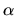
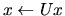
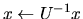
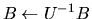

How then can we hope to be able to achieve sufficient control over vectorization, data movement, and parallelism in portable Fortran code, to obtain the levels of performance that machines can offer?
The LAPACK strategy for combining efficiency with portability is to construct the software as much as possible out of calls to the BLAS (Basic Linear Algebra Subprograms); the BLAS are used as building blocks.
The efficiency of LAPACK software depends on efficient implementations of the BLAS being provided by computer vendors (or others) for their machines. Thus the BLAS form a low-level interface between LAPACK software and different machine architectures. Above this level, almost all of the LAPACK software is truly portable.
There are now three levels of BLAS:
Here, A, B and C are matrices, x and y are vectors, and  and are scalars.
The Level 1 BLAS are used in LAPACK, but for convenience rather than for performance: they perform an insignificant fraction of the computation, and they cannot achieve high efficiency on most modern supercomputers.
The Level 2 BLAS can achieve near-peak performance on many vector processors, such as a single processor of a CRAY Y-MP, CRAY C90, or CONVEX C4 machine. However on other vector processors, such as a CRAY 2, or a RISC workstation or PC with one more levels of cache, their performance is limited by the rate of data movement between different levels of memory.
This limitation is overcome by the Level 3 BLAS, which perform O(n3) floating-point operations on O(n2) data, whereas the Level 2 BLAS perform only O(n2) operations on O(n2) data.
The BLAS also allow us to exploit parallelism in a way that is transparent to the software that calls them. Even the Level 2 BLAS offer some scope for exploiting parallelism, but greater scope is provided by the Level 3 BLAS, as Table 3.1 illustrates.
| Number of processors: | 1 | 2 | 4 | 8 | 16 |
| Level 2: | 210 | 154 | 385 | 493 | 163 |
| Level 3: | 555 | 1021 | 1864 | 3758 | 4200 |
| Level 2:  | 162 | 152 | 148 | 153 | 137 |
| Level 3: | 518 | 910 | 1842 | 3519 | 5171 |
| Level 2:  | 172 | 80 | 140 | 168 | 17 |
| Level 3:  | 519 | 967 | 1859 | 3507 | 5078 |